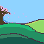

Trumpet's Journey
Piece #1

A New Little Beginning
Piece #2

Sour Cherries
Piece #3

Piece 1 Reflection:
I intended for this piece to be more of a memoir, as I have had the most experience with this form. To that extent, I believe it went relatively successfully. I was able to reflect aspects of my life and give an insight on how I started playing the trumpet, which has become one of my main extracurriculars.
In this piece, I also tried to experiment with a few ideas, though it didn't seem to go too well. For instance, I tried to leave out a small piece of dialogue and jump straight into the other person's reaction. This choice to omit the dialogue ultimately made it feel like something was skipped and didn't feel natural. Additionally, for the introduction, I tried to write it without explicitly referencing myself until the end, but that ended up making it feel choppy, with sentences feeling too independent. Still, I believe that this attempt and opportunity was important to discovering what works and what doesn't work.
Piece 2 Reflection:
For my second piece, I decided to go with a short fantasy, a genre I've always enjoyed reading. For this piece, I also tried to build off the idea of a quote, the idea of which was inspired by the recent Ghibli movie I rewatched, The Wind Rises. The quote that inspired me to write the piece itself was from Emile Zola, where I first heard the quote in a speech/presentation about not giving up and moving forward. I thought that this idea greatly reflected what many have and are experiencing. I then developed this into a fantasy setting, with various races, and, of course, racial discrimination. The idea was to also slightly imply current societal issues and past issues (as per AP US History), mainly segregation and discrimination.
Due to the short nature of these short pieces, this piece was also intended to be a introduction or first chapter of a larger novel that would go more into depth of this character's new life, with an overall slice of life them, which is why I decided to leave some parts more ambiguous, which I also realize makes it work less as an individual short piece.
Piece 3 Reflection:
Since it was National Poetry Month, I wanted to challenge myself with a structured poetic form. I decided to write a sestina, as it would place constraints that would also serve as a clear foundation to build on, which helped guide my writing. Since it was also Cherry Blossom season, I wanted to write about Cherry Blossom, seasons, and include various aspects of Japanese culture, seasonal practices to regional significances. To that extent, I was able to enjoy churning out my past knowledge on Japanese culture and organizing it into a poem.
However, due to other commitments, that month was also busy and I believe I was unable to put out my best work. Thus, I have revised it to have better flow between phrases and lines and make the lines more significant.
Personal Project Piece Reflection:
Of course, as my personal project was on world building and games, it would only make sense to make my personal project a game. For the game, since my main focus was world building, I wanted to focus my world on already existing ideas and creatures, which landed me on Japanese Yokai, a topic I am already quite familiar with.